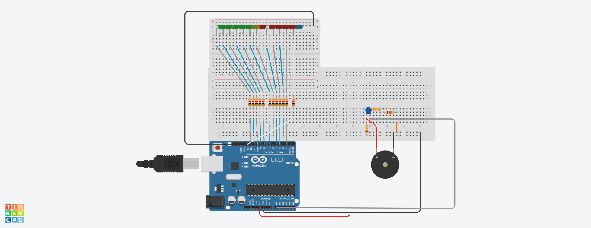
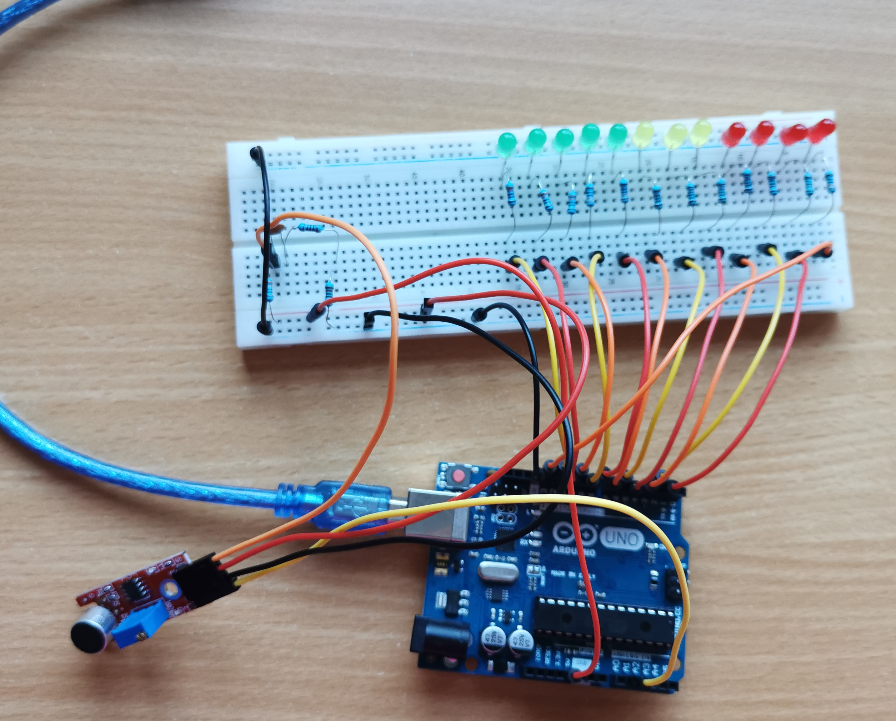

Cilj projekta je da se na osnovu registrovane jačine zvuka upali odeđen broj dioda(što je jačina zvuka veća, veći je broj uključenih dioda).
Mikrofon meri jačinu zvuka.

Na slici je iskorišćena piezo zujalica umesto mirofona jer u Tinkercad-u ne postoji ikonica za mikrofon.
